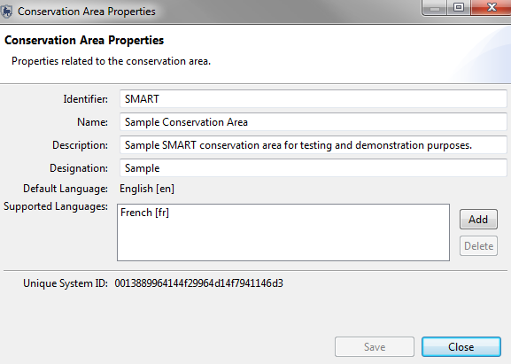
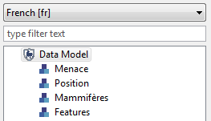
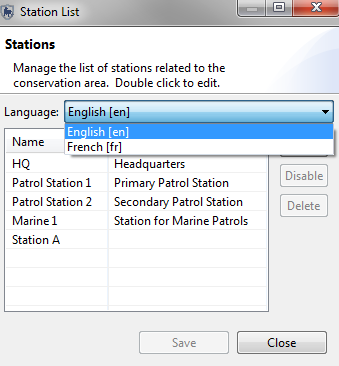

O suporte para vários idiomas da SMART pode ser dividido em dois componentes principais. O primeiro componente é o suporte para a tradução do software principal para que o software exiba todo o texto, botões, menus, etc. no(s) idioma(s) suportado(s). O segundo é fornecer suporte para alterar entradas de modelo de dados, consultas, relatórios e outros textos criados pelo usuário.
O suporte para vários idiomas na SMART para texto criado ou não por software é feito diretamente dentro da SMART. A tela Propriedades da Área de Conservação é aquela na qual idiomas adicionais podem ser adicionados a uma Área de Conservação. Clicar no botão Adicionar abrirá uma caixa de diálogo para verificar os idiomas adicionais que serão suportados pela Área de Conservação.
Depois de idiomas adicionais terem sido disponibilizados, as traduções para os idiomas ainda precisam ser feitas. Os métodos para traduzir as várias informações definidas pelo usuário (modelo de dados, consultas, etc ...) são diferentes e serão descritos nas seções a seguir. Os exemplos serão todos realizados usando o idioma alternativo do francês.

Modelo de Dados
A tradução das entradas do modelo de dados ocorre por meio da propriedade Nome da categoria ou do atributo. A propriedade de nome pode ser considerada um pseudônimo com o nome real sendo a chave.
Alerta: Não altere a chave a menos que você saiba absolutamente o que está fazendo e entenda quais problemas surgirão ao alterar a chave.
O fluxo de trabalho a seguir se aplica a categorias, atributos e valores em árvores e listas. Cada entrada no modelo de dados exigirá traduções individuais. Para cada entrada, o usuário precisará selecionar a categoria, o atributo ou o valor e clicar em Editar.
À esquerda está a entrada original em inglês. Para concluir a tradução, selecione o idioma alternativo na lista suspensa e digite a tradução apropriada no campo de nome.


O idioma padrão do inglês mostra os nomes dos modelos de dados originais (veja à esquerda). Depois de selecionar o idioma alternativo do francês, as entradas traduzidas aparecem com as novas traduções.


Traduções para Agência e Lista de Classificação
As traduções para Agência e Lista de Classificação seguem o mesmo procedimento do modelo de dados. Selecione o idioma alternativo. Digita nas traduções do idioma alternativo.

Traduções para Bases
As traduções para Bases seguem o mesmo procedimento do modelo de dados. Selecione o idioma alternativo. Digita nas traduções do idioma alternativo.

Nota: Mandados de Patrulha, Tipos de Patrulha e Equipes de Patrulha seguem o mesmo procedimento de tradução que as Bases.
Traduções para Mapas de Base
As traduções para mapas de base e outros componentes SMART ocorrem por meio da função Renomear ou Traduzir. Selecione a entrada para traduzir e clique no botão Renomear.
A janela Traduzir Nomes é aberta, mostrando os nomes suportados. A tradução direta da entrada para os idiomas alternativos pode ocorrer nesta janela, sem ter que selecionar previamente o idioma alternativo.


Traduções para Consultas, Relatórios, Planos e Registros de Inteligência
Para traduzir consultas, relatórios, planos ou registros de inteligência, o usuário clicará com o botão direito do mouse para abrir o menu do mouse e, em seguida, selecione "Traduzir". Uma janela Traduzir Nomes é aberta; isso contém os outros idiomas suportados. O exemplo a seguir demonstra o processo usando uma consulta. Traduções para Relatórios, Planos e Registros de Inteligência seguem todos os mesmos procedimentos.


Em vez de armazenar traduções dentro da base de código principal, as traduções são criadas como “fragmentos de plug-in” do Eclipse. Os fragmentos podem ser compilados para criar um pacote de idiomas que pode ser adicionado a um aplicativo instalado existente sem a necessidade de atualizar o aplicativo inteiro.
Os pacotes de idiomas podem ser fornecidos aos usuários por meio de um site, a partir do qual os usuários podem baixar apenas o(s) pacote(s) de idioma de interesse para eles.
Essa abordagem torna muito mais simples fornecer novas traduções e atualizar as traduções existentes, além de oferecer maior flexibilidade aos usuários.
Pacotes de Idiomas
Dependências SMART
As traduções não são mais incluídas na construção do aplicativo padrão. São fornecidos pacotes de idiomas que os usuários podem instalar em sua versão do SMART para suportar vários idiomas. Os pacotes de idiomas estão disponíveis no mesmo local que o aplicativo SMART.
Para instalar um pacote de idiomas:
1. Faça o download do pacote de idiomas necessário (por exemplo: smart_1.1.1_languagepack_fr.zip).
2. Descompacte o conteúdo do pacote de idiomas no diretório de instalação do SMART.
O pacote de idiomas contém diretórios "plug-ins" e "recursos". O conteúdo desses dois diretórios precisa ser mesclado com o conteúdo dos diretórios smart/recursos e smart/plug-ins. Certifique-se de FUNDIR esses diretórios e excluir e substituir.